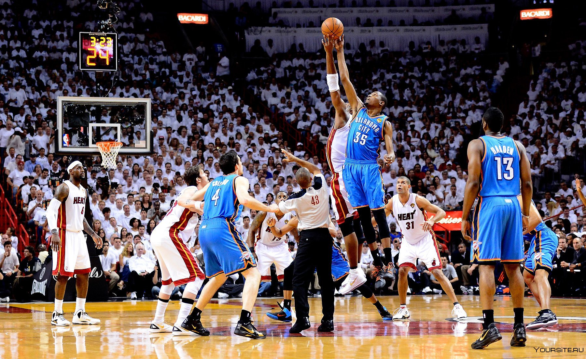

НОВОСТИ БАСКЕТБОЛА
Войнаровски: экс-баскетболистка сборной Беларуси Хардинг может стать тренером «Шарлотт»
Известный инсайдер ESPN Эдриан Войнаровски сообщил о том, что руководству «Шарлотт Хорнетс» было дано разрешение провести собеседование с тренером фарм-клуба «Сакраменто Кингз» в Лиге развития Линдзи Хардинг. Специалистка может стать первой женщиной на посту главного тренера в истории НБА. В нынешнем сезоне G-лиги Хардинг вывела свою команду в финал Западной конференции и получила награду «Тренер года». Во время своей игровой карьеры Линдзи принимала участие в матчах сборной Беларуси, с которой смогла занять четвёртое место на чемпионате Европы. Хардинг также выступала за «Динамо» Курск в сезонах-2010/2011 и 2015/2016. «Хорнетс» также было разрешено провести собеседование с ассистентами «Денвер Наггетс», «Бостон Селтикс», «Сакраменто Кингз» и «Финикс Санз».
«Это моя мечта». Вембаньяма высказался о возможности сыграть за Францию на ОИ
Центровой «Сан-Антонио Спёрс» Виктор Вембаньяма высказался о возможности сыграть за сборную Франции на предстоящей Олимпиаде в Париже. «У меня нет никаких особых ожиданий. Мы представляем нашу родную страну, это очень важно. Я не могу дождаться. Быть на Олимпиаде — моя мечта с детства. Я хочу выжать из этой возможности всё. Когда я был ребёнком, я постоянно говорил своим родителям, что хотел бы поучаствовать на ОИ-2016 в Рио в составе баскетбольной команды. Я немного опоздал, но всё сложилось хорошо, так или иначе», — приводит слова Вембаньямы Eurohoops. Олимпийские игры пройдут с 26 июля по 11 августа. Это будет первый крупный международный турнир, в котором примет участие Вембаньяма.
предыдущая следующая